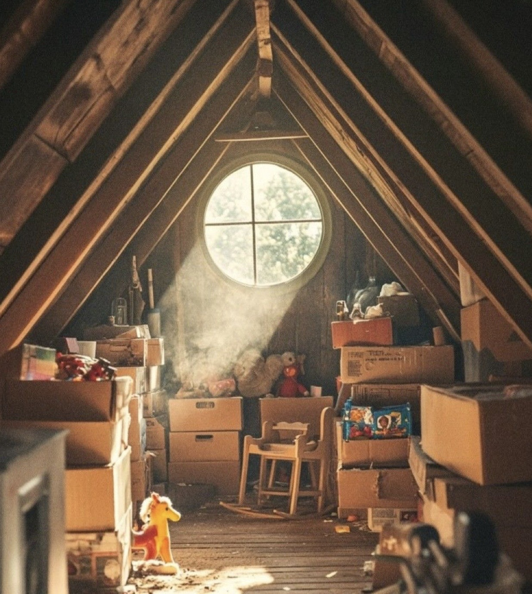

FootArt: искусство создавать комфорт
Обувь, которая становится частью истории вашей семьи
Узнать большеСемейные традиции
FootArt — это возрождение семейного мастерства. Сочетая вековые технологии и современную эстетику, мы создаём обувь, которая передаётся из поколения в поколение.
После университета Никита вернулся в родной город, полный идей и амбиций. Однажды, разбирая чердак старого дома, он нашёл пожелтевшие чертежи обуви и записи деда. Среди них была особенная тетрадь с эскизами и надписью: «Искусство создавать комфорт — самое важное в нашей профессии». Эта находка стала отправной точкой для создания FootArt. Сегодня фабрика продолжает традиции семейного мастерства, создавая обувь, которая становится частью истории многих семей.
Почему нас выбирают

Каждая пара обуви FootArt — это воплощение любви к ремеслу, бережное отношение к наследию и желание дарить комфорт. Мы соединяем прошлое и будущее в каждой строчке.
Ключевые преимущества
Традиции
Сохраняем семейные традиции обувного мастерства
История
Создаём модели, которые становятся частью истории семей
Мастера
Работаем с мастерами, влюблёнными в своё дело
Искусство
Каждая пара обуви — это произведение искусства